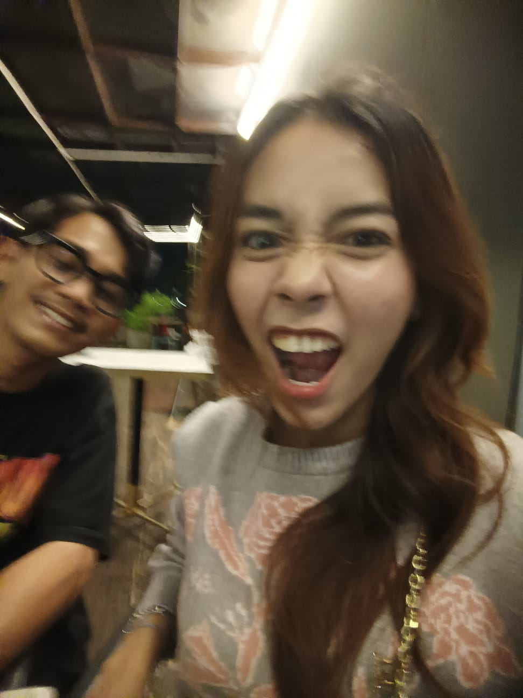

Bukan biru yang terang seperti langit tanpa awan, melainkan biru yang luas dan dalam; warna yang menyimpan banyak hal tanpa selalu perlu menjelaskannya.
Mungkin karena itu aku menyukainya.
Sebab seperti dirimu, ada begitu banyak hal yang tidak selalu mudah untuk dipahami, tetapi selalu membuatku ingin mengenalnya lebih jauh.
Biru adalah caraku mencintaimu.
Aku tidak mencintaimu hanya pada hari-hari ketika semuanya berjalan baik. Bukan hanya ketika tawamu terdengar lepas atau ketika dunia sedang berpihak kepadamu.
Aku juga mencintaimu pada hari-hari yang lebih sunyi; ketika kesedihan membuatmu memilih diam, ketika lelah membuatmu menjauh, atau ketika sesuatu di dalam dirimu terasa terlalu berat untuk diceritakan.
Ada bagian-bagian dari dirimu yang mungkin tidak kamu sukai. Sifat yang ingin kamu ubah, luka yang belum sepenuhnya sembuh, atau masa lalu yang sesekali kembali dan membuatmu kehilangan arah.
Namun bagiku, semua itu bukan alasan untuk mencintaimu lebih sedikit.
Karena aku tidak ingin mengenalmu hanya dari sisi yang indah.
Aku ingin mengenal seluruh musim dalam dirimu.

Saat kamu menjadi langit yang cerah, aku ingin ikut merasakan hangatnya. Saat hujan datang dan semuanya terasa lebih berat, aku ingin tetap berada di sana.
Aku tidak mencintaimu karena kamu sempurna.
Aku mencintaimu karena kamu adalah dirimu sendiri— dengan segala hal yang telah kamu lewati, segala sesuatu yang sedang kamu perjuangkan, dan segala sisi yang mungkin tidak selalu kamu tunjukkan kepada dunia.
Maka jika suatu hari kamu bertanya apa yang membuatku bertahan, jawabannya sederhana.
Aku tidak pernah jatuh cinta hanya pada bagian terbaikmu.
Aku jatuh cinta pada keseluruhanmu.
Pada senang yang membuatmu bersinar, pada sedih yang membuatmu rapuh, pada segala sisi dirimu yang lahir dari perjalanan panjangmu.
Dan mungkin, itulah arti dari mencintai seseorang bagiku:
bukan memilih bagian yang paling mudah untuk dicintai, melainkan menerima keseluruhannya dan tetap menemukan alasan untuk tinggal.
Seperti biru yang tetap menjadi biru ketika langit sedang cerah maupun mendung, perasaanku kepadamu tidak membutuhkan keadaan yang sempurna untuk tetap ada.
Ia hanya membutuhkan satu arah.
Kepadamu.
Dan jika aku boleh meminta satu hal, biarkan aku juga memiliki ruang di dalam hatimu untuk menjadi diriku sendiri—untuk berbicara, untuk merasa, untuk rapuh, dan untuk dicintai tanpa harus menyembunyikan apa yang sebenarnya ada di dalam diriku.
Karena aku pun memiliki banyak hal yang ingin kusampaikan kepadamu; tentang apa yang kupikirkan, tentang apa yang kurasakan, tentang hal-hal yang terkadang terlalu sulit untuk kuucapkan.
Aku tidak meminta untuk selalu dimengerti.
Aku hanya ingin perasaanku memiliki tempat untuk didengar, pikiranku memiliki ruang untuk disampaikan, dan keberadaanku dihargai oleh seseorang yang begitu berarti bagiku.
Aku ingin dicintai bukan hanya sebagai seseorang yang hadir di sisimu, tetapi sebagai seseorang yang juga memiliki hati, rasa, dan cerita yang ingin kamu kenal.
Sebab jika aku ingin mengenal seluruh musim dalam dirimu, aku pun berharap suatu hari nanti kamu bersedia mengenal seluruh musim dalam diriku.
Dan mungkin, di sanalah cinta menemukan bentuknya yang paling sederhana: ketika dua orang tidak hanya ingin dicintai, tetapi juga ingin saling memahami.